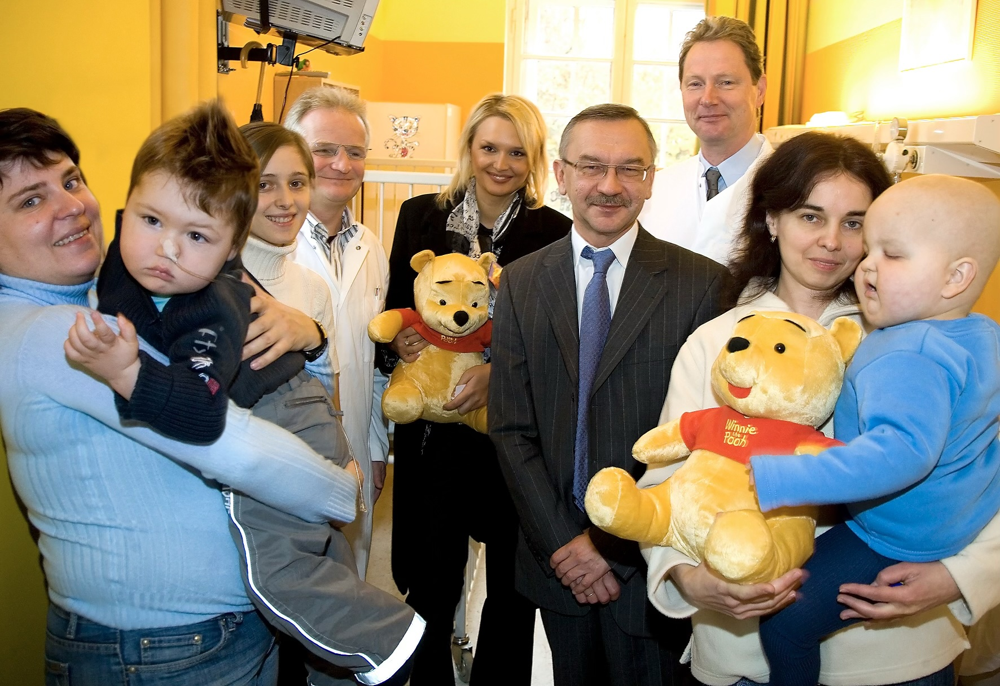
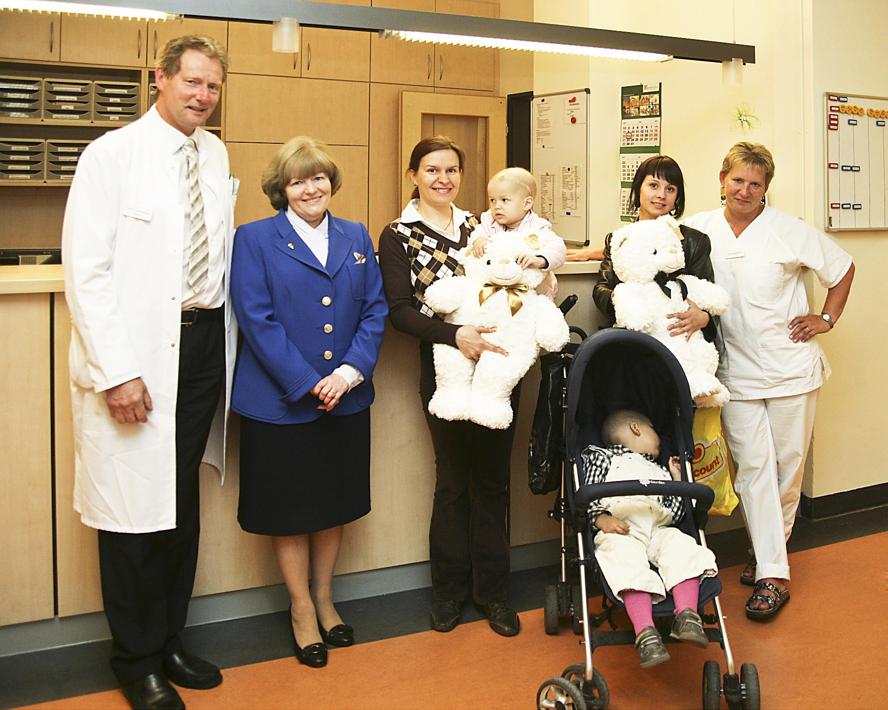

Wenn ich heute an die Ukraine denke, sehe ich nicht zuerst Landkarten oder Botschafter. Ich sehe Eltern. Mütter und Väter, die mit ihren krebskranken Kindern nach Berlin kamen und alles hinter sich gelassen hatten. Sie sprachen kaum Deutsch, oft auch kein Englisch. Viele hatten eine tagelange Reise hinter sich. Manche wirkten erschöpft, andere voller Hoffnung. Fast alle hatten dieselbe Frage: „Können Sie unserem Kind helfen?“
Diese Frage konnte ich fast immer mit Ja beantworten. Die zweite Frage war schwieriger: „Wer bezahlt die Behandlung?“ Deutschland übernimmt die Behandlung ausländischer Patienten natürlich nicht automatisch. Unsere Klinik konnte das ebenfalls nicht. So sehr wir helfen wollten – wir konnten keine kostenlose Krebstherapie für Kinder aus dem Ausland finanzieren.
Deshalb boten wir den Familien an, ihre Kinder zum Selbstkostenpreis zu behandeln. Gleichzeitig versprach ich ihnen, nach Möglichkeiten zu suchen, die Finanzierung sicherzustellen. Erfreulicherweise fanden sich diese Möglichkeiten häufiger, als ich zunächst gedacht hatte. Über die Stiftung „Ein Herz für Kinder“ konnten zahlreiche Behandlungen finanziert werden.
Nach und nach kamen immer mehr ukrainische Kinder nach Berlin. Zeitweise betreuten wir gleichzeitig fünf bis zehn Kinder aus der Ukraine. Bei insgesamt etwa vierzig bis fünfzig Neuerkrankungen pro Jahr war das ein bemerkenswerter Anteil.

Mit den Kindern kamen ihre Familien. Sie lebten plötzlich in einer fremden Stadt, verstanden die Sprache nicht und mussten gleichzeitig die schwerste Zeit ihres Lebens bewältigen. Ich bewunderte ihren Mut. Gleichzeitig fiel mir auf, mit welchem Vertrauen sie zu uns kamen.
Ich fragte die Eltern immer wieder, weshalb sie den langen Weg nach Deutschland auf sich genommen hatten. Die Behandlung in der Ukraine war doch kostenlos. Die Antwort war fast immer dieselbe: „Nicht die Kosten sind das Problem.“ Dann folgte eine kurze Pause. „Die Qualität.“
Dieser Satz beschäftigte mich lange. Natürlich freute es mich, dass unsere Klinik ein solches Vertrauen genoss. Gleichzeitig wurde mir klar, dass wir das eigentliche Problem niemals lösen würden, wenn wir nur möglichst viele Kinder nach Berlin holten. Selbst wenn wir unsere Station vollständig mit ukrainischen Patienten belegt hätten, hätten wir den meisten Kindern in ihrem Heimatland trotzdem nicht helfen können.

Zum ersten Mal entstand deshalb ein Gedanke, der mich viele Jahre begleiten sollte. Vielleicht mussten wir nicht nur Kinder nach Berlin holen. Vielleicht mussten wir die Kinderonkologie in der Ukraine selbst stärken.